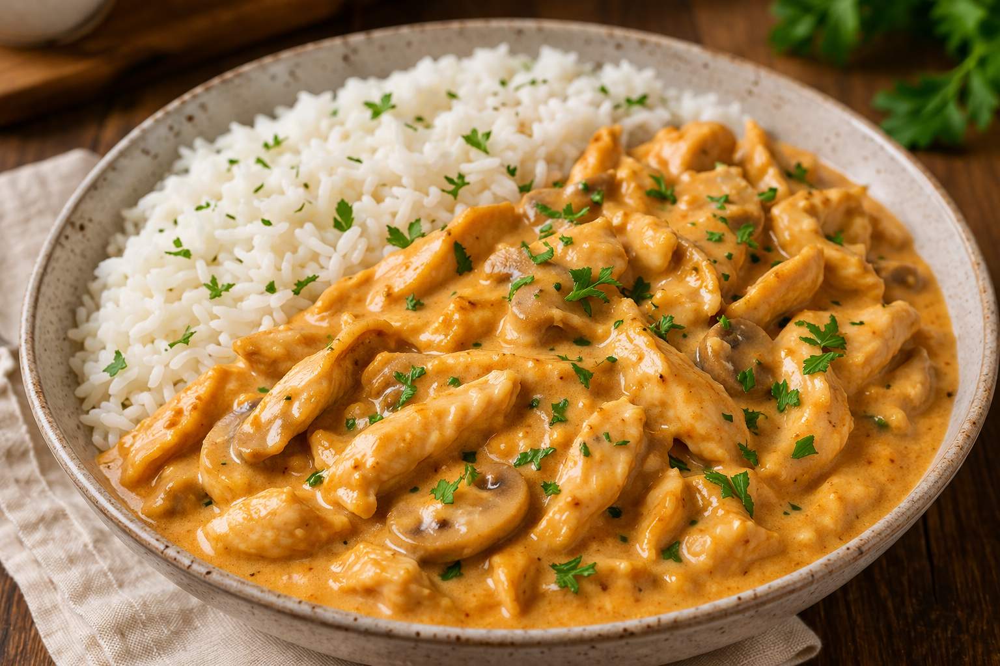

Receitas que inspiram

Favoritos
-

Home
-

Aves
-

Carnes
-

Peixes
-

Massas
-

Tortas
-

Sobremesas
-

Saudáveis
🍽️ Receita de Strogonoff

📝 Ingredientes
- 500g de peito de frango em cubos
- 1 caixa de creme de leite
- 1/2 cebola picada
- 2 dentes de alho
- 1/2 xícara de molho de tomate
- 2 colheres de ketchup
- 1 colher de mostarda
- Sal e pimenta a gosto
- Óleo ou manteiga para refogar
👨🍳 Modo de Preparo
O strogonoff de frango começa com o preparo do refogado. Em uma panela, aqueça um fio de óleo ou uma colher de manteiga e refogue a cebola picada e o alho até dourarem levemente. Em seguida, adicione o frango em cubos e mexa bem até que ele fique cozido e dourado por todos os lados. Acrescente o molho de tomate, o ketchup e a mostarda, misturando até formar um molho uniforme.
Depois de temperar com sal e pimenta a gosto, deixe cozinhar por alguns minutos em fogo baixo para que os sabores se misturem. Por último, desligue o fogo e adicione o creme de leite, mexendo delicadamente até o molho ficar bem cremoso. Sirva ainda quente, acompanhado de arroz branco e batata palha.